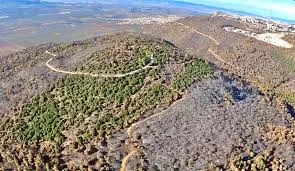

תניא, רבי אליעזר אומר: כל שלא אמר ארץ חמדה טובה ורחבה, בברכת הארץ - לא יצא ידי חובתו (גמ' ברכות מח, ב).
בברכת המזון לא מספיק להודות על הארץ, אלא יש להודות על 'מעלות הארץ'.
ועל שלושה מעלות אנו מודים: 'ארץ חמדה' שגדולי העולם חמדו אותה לשבת בתוכה, ומי לנו גדול ממשה רבנו ע"ה שכל כך השתוקק להכנס לארץ אין זאת אלא שיש בה מעלות רוחניות שאין בשום מקום אחר בעולם.
'ארץ טובה' הכוונה שאפשר ללמוד בה תורה יותר מאשר שאר המקומות שהרי אין תורה כתורת א"י, ואוירא דארץ ישראל מחכים, והיא מכוונת כנגד שער השמים מוצא התורה הקדושה, וגם שהיא טובה כמשמעה שהרי היא 'ארץ זבת חלב ודבש', ויש בה את שבעת המינים, שנשתבחה בה א"י יותר משאר ארצות.
'ארץ רחבה' היינו שהיא יכולה להכיל את כל האוכלוסין עד בלי די, שהרי היא ארץ צבי שגודלת ומתרחבת לפי יושביה וכשאין יושביה עליה היא מתכווצת וזה מיוחד רק לארץ ישראל (האר עיננו).

בביאור השבח 'ארץ חמדה טובה ורחבה', כתב הרב גולדווסר בספרו תפוחי זהב: הנה בכדי שמתנה תהיה חשובה צריכה היא לשלשה תנאים: א. שתהא באיכות טובה. ב. שתהא בכמות מספיקה. ג שיהא המקבל משתוקק אליה. אם יחסר אחד מן התנאים לא תשביע את רצון המקבל.
כנגד שלשה תנאים אלו אנו מודים לקב"ה ואומרים: נודה לך ה' אלקינו על שהנחלת לאבותינו ארץ חמדה (שמשתוקקים אליה) טובה (באיכות) ורחבה (בכמות).
ה'בת עין' - אבנים כיהלומים
מעשה ברבי אברהם דוב מאבריץ' זצ"ל בעל ה'בת עין', שהגיע לזקנה והשתוקק לעלות לארץ ישראל. מכשולים עצומים נערמו על דרכו. תחילה לא קל היה לנטוש רבנות בעיר מכובדת ופרנסה בהרחבה וללכת לארץ בה אין מכיר ואין מודע. אבל החלטתו לקיים מצוות יישוב ארץ ישראל בגופו הייתה נחושה, והיה הרה"ק מתכונן לנסיעה ואפוף כולו אווירא דארץ ישראל, סופר את הימים ואת השעות לקראת יום הנסיעה הנכסף. אינו רואה ואינו שומע מאומה רק ארץ ישראל וארץ ישראל.
והנה לאחר שזכה לעלות לארץ הקודש, פעם אחת הסתגר בחדרו ימים רבים, וכעבור זמן יצא מהחדר בשמחה ועשה סעודה גדולה. כאשר נשאל הרבי לסיבת שמחתו הסביר את מה שאירע:
פעם אחת הגיע אל מקום מגוריו, כשהיה עדין בחוץ לארץ, שד''ר (שלוחא דרבנן - שליח) מארץ ישראל, שדרש בשבח ובמעלת הארץ הקדושה, ומרוב התפעלות הפליג ואמר: "מה אומר ומה אדבר, הלא אפילו האבנים הפשוטות המושלחות בחוצות ארץ ישראל מאירות כאבנים טובות וכהילומים".
והנה לאחר שעלה הרבי לארץ ישראל פגש את השליח ואמר לו: "חיפשתי את האבנים הטובות ולא מצאתי..."
ענה לו השליח: "מי שעיניו זכות ונקיות - זוכה ורואה".
הדברים זעזעו את ליבו של הרבי, וכך אמר לתלמידו הרב פישל בערשטיין זצ''ל: "כשומעי דבר זה הסגרתי עצמי בחדרי להתבודד מבני אדם, עד שזכיתי לדרגה זו – לראות את האבנים בחוצות כיהלומים ואבנים טובות, עכשיו שזכיתי לזה – הנני עושה סעודה גדולה – להודות לה' יתברך".
להפצרת איש אמוניו החסיד ר' פישל ברנשטיין ז"ל, הבהיר הרה"ק לנוכחים את כל הפרשה באומרו: "מעודי לא הסכנתי לשמוע איש מדבר אלי בתקיפות כפי שהמשולח דיבר – "מי שזוכה רואה". הבינותי אפוא כי מן השמים שמו דברים בפיו להוכיחני כי טרם הגעתי לשלמות, כדי שאוכל להשיג הרגשה כזו בארץ ישראל. לכן הסתגרתי במשך שנה תמימה להזדכך ולהתקדש בקדושה עילאה, עד שזכיתי היום לראות כי אכן אפילו האבנים הפשוטות שבארץ ישראל מרגליות הן, ככתוב (ישעיהו נד, יב): "וְשַׂמְתִּי כַּדְכֹד שִׁמְשֹׁתַיִךְ וּשְׁעָרַיִךְ לְאַבְנֵי אֶקְדָּח וְכָל גְּבוּלֵךְ לְאַבְנֵי חֵפֶץ". (המבשר, בשלח, תשע"ב).